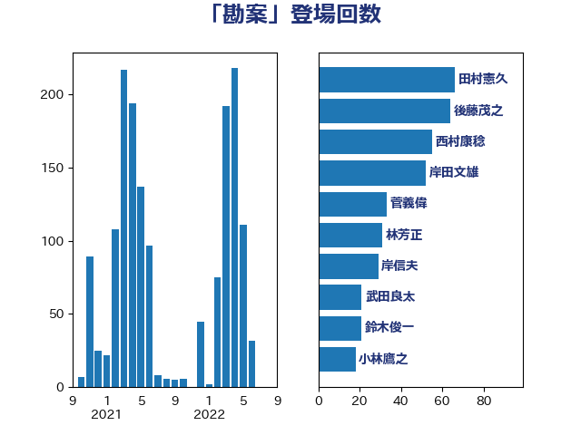

単語「勘案」

| 田村憲久 | 自由民主党 | 66 回 |
| 後藤茂之 | 自由民主党 | 64 回 |
| 西村康稔 | 自由民主党 | 55 回 |
| 岸田文雄 | 自由民主党 | 52 回 |
| 菅義偉 | 自由民主党 | 33 回 |
| 林芳正 | 自由民主党 | 31 回 |
| 岸信夫 | 自由民主党 | 29 回 |
| 武田良太 | 自由民主党 | 21 回 |
| 鈴木俊一 | 自由民主党 | 21 回 |
| 小林鷹之 | 自由民主党 | 18 回 |
| 赤羽一嘉 | 公明党 | 18 回 |
| 上川陽子 | 自由民主党 | 14 回 |
| 坂本哲志 | 自由民主党 | 12 回 |
| 塩村あやか | 立憲民主党 | 11 回 |
| 麻生太郎 | 自由民主党 | 11 回 |
| 梶山弘志 | 自由民主党 | 10 回 |
| 田島麻衣子 | 立憲民主党 | 10 回 |
| 末松信介 | 自由民主党 | 9 回 |
| 田村まみ | 国民民主党 | 9 回 |
| 茂木敏充 | 自由民主党 | 9 回 |
| 萩生田光一 | 自由民主党 | 8 回 |
| 野上浩太郎 | 自由民主党 | 8 回 |
| 金子恭之 | 自由民主党 | 8 回 |
| 岸真紀子 | 立憲民主党 | 7 回 |
| 平井卓也 | 自由民主党 | 7 回 |
| 打越さく良 | 立憲民主党 | 7 回 |
| 足立康史 | 日本維新の会 | 7 回 |
| 野田聖子 | 自由民主党 | 7 回 |
| 階猛 | 立憲民主党 | 7 回 |
| 吉田統彦 | 立憲民主党 | 6 回 |
| 山際大志郎 | 自由民主党 | 6 回 |
| 河野太郎 | 自由民主党 | 6 回 |
| 磯崎仁彦 | 自由民主党 | 6 回 |
| 穀田恵二 | 日本共産党 | 6 回 |
| 芳賀道也 | 国民民主党 | 6 回 |
| 佐藤英道 | 公明党 | 5 回 |
| 勝部賢志 | 立憲民主党 | 5 回 |
| 宮本徹 | 日本共産党 | 5 回 |
| 川田龍平 | 立憲民主党 | 5 回 |
| 舞立昇治 | 自由民主党 | 5 回 |
| 舟山康江 | 国民民主党 | 5 回 |
| 丸川珠代 | 自由民主党 | 4 回 |
| 倉林明子 | 日本共産党 | 4 回 |
| 北側一雄 | 公明党 | 4 回 |
| 古川禎久 | 自由民主党 | 4 回 |
| 山本博司 | 公明党 | 4 回 |
| 後藤祐一 | 立憲民主党 | 4 回 |
| 柴田巧 | 日本維新の会 | 4 回 |
| 熊谷裕人 | 立憲民主党 | 4 回 |
| 牧島かれん | 自由民主党 | 4 回 |
| 古川康 | 自由民主党 | 3 回 |
| 坂井学 | 自由民主党 | 3 回 |
| 塩川鉄也 | 日本共産党 | 3 回 |
| 宮路拓馬 | 自由民主党 | 3 回 |
| 小泉進次郎 | 自由民主党 | 3 回 |
| 山口壯 | 自由民主党 | 3 回 |
| 岡田克也 | 立憲民主党 | 3 回 |
| 早稲田ゆき | 立憲民主党 | 3 回 |
| 松野博一 | 自由民主党 | 3 回 |
| 橋本聖子 | 無所属 | 3 回 |
| 江島潔 | 自由民主党 | 3 回 |
| 玉木雄一郎 | 国民民主党 | 3 回 |
| 細田健一 | 自由民主党 | 3 回 |
| 緒方林太郎 | 無所属 | 3 回 |
| 美延映夫 | 日本維新の会 | 3 回 |
| 音喜多駿 | 日本維新の会 | 3 回 |
| たがや亮 | れいわ新選組 | 2 回 |
| 一谷勇一郎 | 日本維新の会 | 2 回 |
| 井上信治 | 自由民主党 | 2 回 |
| 井上哲士 | 日本共産党 | 2 回 |
| 仁木博文 | 無所属 | 2 回 |
| 伊藤岳 | 日本共産党 | 2 回 |
| 古賀之士 | 立憲民主党 | 2 回 |
| 吉川元 | 立憲民主党 | 2 回 |
| 吉川沙織 | 立憲民主党 | 2 回 |
| 城井崇 | 立憲民主党 | 2 回 |
| 大串博志 | 立憲民主党 | 2 回 |
| 大島敦 | 立憲民主党 | 2 回 |
| 大野泰正 | 自由民主党 | 2 回 |
| 宗清皇一 | 自由民主党 | 2 回 |
| 宮本岳志 | 日本共産党 | 2 回 |
| 寺田学 | 立憲民主党 | 2 回 |
| 小宮山泰子 | 立憲民主党 | 2 回 |
| 小林史明 | 自由民主党 | 2 回 |
| 小田原潔 | 自由民主党 | 2 回 |
| 山井和則 | 立憲民主党 | 2 回 |
| 山岸一生 | 立憲民主党 | 2 回 |
| 山崎誠 | 立憲民主党 | 2 回 |
| 川合孝典 | 国民民主党 | 2 回 |
| 斉藤鉄夫 | 公明党 | 2 回 |
| 木原誠二 | 自由民主党 | 2 回 |
| 梅村みずほ | 日本維新の会 | 2 回 |
| 櫻井周 | 立憲民主党 | 2 回 |
| 池下卓 | 日本維新の会 | 2 回 |
| 渡辺周 | 立憲民主党 | 2 回 |
| 神田潤一 | 自由民主党 | 2 回 |
| 秋野公造 | 公明党 | 2 回 |
| 若宮健嗣 | 自由民主党 | 2 回 |
| 若松謙維 | 公明党 | 2 回 |
| 落合貴之 | 立憲民主党 | 2 回 |
| 藤井比早之 | 自由民主党 | 2 回 |
| 藤田文武 | 日本維新の会 | 2 回 |
| 赤澤亮正 | 自由民主党 | 2 回 |
| 野田国義 | 立憲民主党 | 2 回 |
| 鈴木貴子 | 自由民主党 | 2 回 |
| 長妻昭 | 立憲民主党 | 2 回 |
| 阿部司 | 日本維新の会 | 2 回 |
| 阿部知子 | 立憲民主党 | 2 回 |
| 高橋はるみ | 自由民主党 | 2 回 |
| 黄川田仁志 | 自由民主党 | 2 回 |
| 三原じゅん子 | 自由民主党 | 1 回 |
| 三木亨 | 自由民主党 | 1 回 |
| 三木圭恵 | 日本維新の会 | 1 回 |
| 三谷英弘 | 自由民主党 | 1 回 |
| 上杉謙太郎 | 自由民主党 | 1 回 |
| 中根一幸 | 自由民主党 | 1 回 |
| 中谷一馬 | 立憲民主党 | 1 回 |
| 中谷真一 | 自由民主党 | 1 回 |
| 串田誠一 | 日本維新の会 | 1 回 |
| 井原巧 | 自由民主党 | 1 回 |
| 井林辰憲 | 自由民主党 | 1 回 |
| 伊藤孝恵 | 国民民主党 | 1 回 |
| 伊藤渉 | 公明党 | 1 回 |
| 前原誠司 | 国民民主党 | 1 回 |
| 加藤勝信 | 自由民主党 | 1 回 |
| 北村経夫 | 自由民主党 | 1 回 |
| 古屋範子 | 公明党 | 1 回 |
| 古川元久 | 国民民主党 | 1 回 |
| 古賀友一郎 | 自由民主党 | 1 回 |
| 吉川赳 | 無所属 | 1 回 |
| 吉田とも代 | 日本維新の会 | 1 回 |
| 吉田忠智 | 立憲民主党 | 1 回 |
| 和田義明 | 自由民主党 | 1 回 |
| 堀内詔子 | 自由民主党 | 1 回 |
| 大塚耕平 | 国民民主党 | 1 回 |
| 大家敏志 | 自由民主党 | 1 回 |
| 大西健介 | 立憲民主党 | 1 回 |
| 太田房江 | 自由民主党 | 1 回 |
| 奥野総一郎 | 立憲民主党 | 1 回 |
| 安江伸夫 | 公明党 | 1 回 |
| 宮崎雅夫 | 自由民主党 | 1 回 |
| 小倉將信 | 自由民主党 | 1 回 |
| 小山展弘 | 立憲民主党 | 1 回 |
| 小沼巧 | 立憲民主党 | 1 回 |
| 小西洋之 | 立憲民主党 | 1 回 |
| 山下貴司 | 自由民主党 | 1 回 |
| 山添拓 | 日本共産党 | 1 回 |
| 岡本あき子 | 立憲民主党 | 1 回 |
| 岩屋毅 | 自由民主党 | 1 回 |
| 平木大作 | 公明党 | 1 回 |
| 徳永エリ | 立憲民主党 | 1 回 |
| 斎藤嘉隆 | 立憲民主党 | 1 回 |
| 新藤義孝 | 自由民主党 | 1 回 |
| 有村治子 | 自由民主党 | 1 回 |
| 木村次郎 | 自由民主党 | 1 回 |
| 末松義規 | 立憲民主党 | 1 回 |
| 本田顕子 | 自由民主党 | 1 回 |
| 杉久武 | 公明党 | 1 回 |
| 杉本和巳 | 日本維新の会 | 1 回 |
| 杉田水脈 | 自由民主党 | 1 回 |
| 東徹 | 日本維新の会 | 1 回 |
| 松本洋平 | 自由民主党 | 1 回 |
| 柚木道義 | 立憲民主党 | 1 回 |
| 森田俊和 | 立憲民主党 | 1 回 |
| 横沢高徳 | 立憲民主党 | 1 回 |
| 橋本岳 | 自由民主党 | 1 回 |
| 橘慶一郎 | 自由民主党 | 1 回 |
| 武部新 | 自由民主党 | 1 回 |
| 津島淳 | 自由民主党 | 1 回 |
| 浅野哲 | 国民民主党 | 1 回 |
| 海江田万里 | 立憲民主党 | 1 回 |
| 深澤陽一 | 自由民主党 | 1 回 |
| 熊田裕通 | 自由民主党 | 1 回 |
| 牧山ひろえ | 立憲民主党 | 1 回 |
| 牧義夫 | 立憲民主党 | 1 回 |
| 田村智子 | 日本共産党 | 1 回 |
| 田村貴昭 | 日本共産党 | 1 回 |
| 田畑裕明 | 自由民主党 | 1 回 |
| 石川博崇 | 公明党 | 1 回 |
| 石川香織 | 立憲民主党 | 1 回 |
| 石橋通宏 | 立憲民主党 | 1 回 |
| 石破茂 | 自由民主党 | 1 回 |
| 礒崎哲史 | 国民民主党 | 1 回 |
| 神津たけし | 立憲民主党 | 1 回 |
| 神谷裕 | 立憲民主党 | 1 回 |
| 福島伸享 | 無所属 | 1 回 |
| 秋本真利 | 自由民主党 | 1 回 |
| 笠井亮 | 日本共産党 | 1 回 |
| 篠原豪 | 立憲民主党 | 1 回 |
| 米山隆一 | 立憲民主党 | 1 回 |
| 羽生田俊 | 自由民主党 | 1 回 |
| 舩後靖彦 | れいわ新選組 | 1 回 |
| 葉梨康弘 | 自由民主党 | 1 回 |
| 藤川政人 | 自由民主党 | 1 回 |
| 西岡秀子 | 国民民主党 | 1 回 |
| 西村智奈美 | 立憲民主党 | 1 回 |
| 西銘恒三郎 | 自由民主党 | 1 回 |
| 谷川とむ | 自由民主党 | 1 回 |
| 赤木正幸 | 日本維新の会 | 1 回 |
| 逢坂誠二 | 立憲民主党 | 1 回 |
| 重徳和彦 | 立憲民主党 | 1 回 |
| 金城泰邦 | 公明党 | 1 回 |
| 長坂康正 | 自由民主党 | 1 回 |
| 青木愛 | 立憲民主党 | 1 回 |
| 高市早苗 | 自由民主党 | 1 回 |
| 高木宏壽 | 自由民主党 | 1 回 |
| 高橋克法 | 自由民主党 | 1 回 |
| 高橋千鶴子 | 日本共産党 | 1 回 |
| 高見康裕 | 自由民主党 | 1 回 |